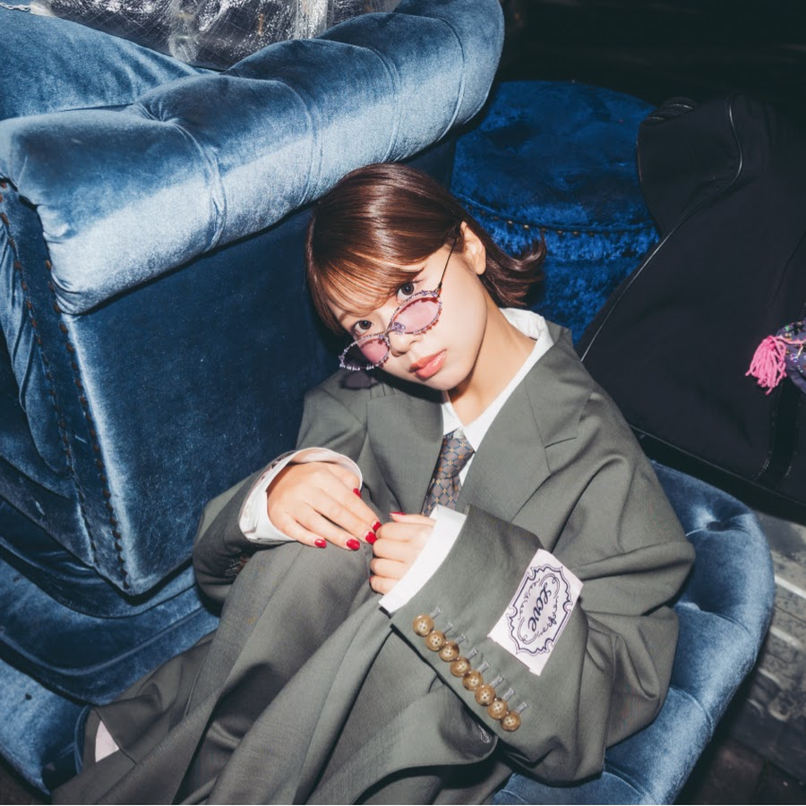

J-POP LIVE IN KOREA
J-POP / SINGER-SONGWRITER
asmi
2026년 6월 14일(일) 오후 6:00 · YES24 원더로크홀CONCERT DATES
확인된 공연 일정
지난 공연 기록입니다. 일정과 예매 조건은 당시의 기록이며 현재 판매 상태를 나타내지 않습니다. 동일 시리즈에는 1회 공연 기록이 있습니다.
ARTIST
아티스트 소개
부드럽고 친근한 음색으로 일상의 감정과 관계를 노래하는 일본 싱어송라이터입니다.
asmi 아티스트 정보 →VENUE GUIDE
공연장 안내
서울 신촌 아트레온 건물에 있습니다. 지하철 2호선 신촌역에서 도보로 이동할 수 있으며, 입장 대기 공간이 넓지 않아 공지된 번호별 대기 시간을 확인하는 편이 좋습니다.
YES24 원더로크홀 방문 가이드 보기 →DAY PLAN
공연 당일 공통 준비
ARTIST TRACKS
공식 대표곡 영상
SOURCES
공식 출처와 검증 기록
일정 확인 2026-06-11 · 가격 확인 2026-08-12 · 판매 상태 확인 미확인 · 본문 수정 미기록
정보 재확인 대상입니다. 위에 적힌 항목별 확인일을 보고 예매 전 공식 출처에서 현재 안내를 다시 확인하세요.